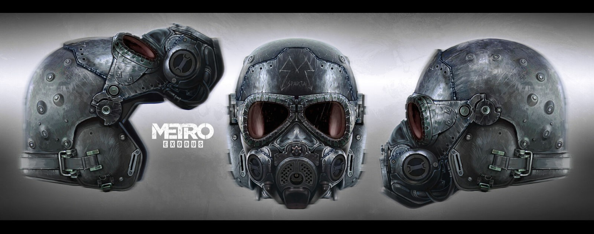

•Защита• |
|---|
|
Спартанский шлем — снаряжение Metro 2033. Шлем с интегрированной фильтрующей маской, используемый преимущественно солдатами Полиса и Ордена, чрезвычайно редко встречаясь у представителей других фракций. Обязательный элемент брони каждого спартанца, обеспечивает защиту головы и, что особенно важно при вылазках на поверхность, не мешает пользоваться противогазом. В Metro 2033 и Metro: Last Light прототипом встроенной в шлем маски выступал чехословацкий противогаз M10. В Metro Exodus его сменил M04, предназначенный для игр в страйкбол. В некоторых роликах первых двух игр этот шлем можно заметить на Артёме, хотя в самом игровом процессе он всегда использует обычный противогаз. Перед битвой в Д-6 Артём надевает шлем «Алтын», однако в ролике плохой концовки на нём будет именно спартанский шлем. Свои тайники на поверхности сталкеры обычно помечают граффити с этим шлемом. Их также можно заметить на некоторых станциях метро и даже в пассажирском вагоне с Волги (где он, вероятно, находится в качестве заглушки). |